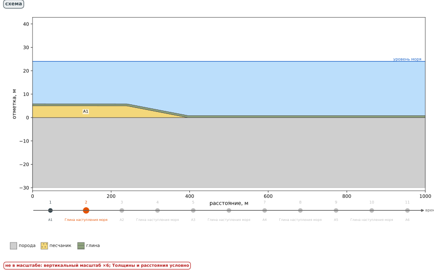
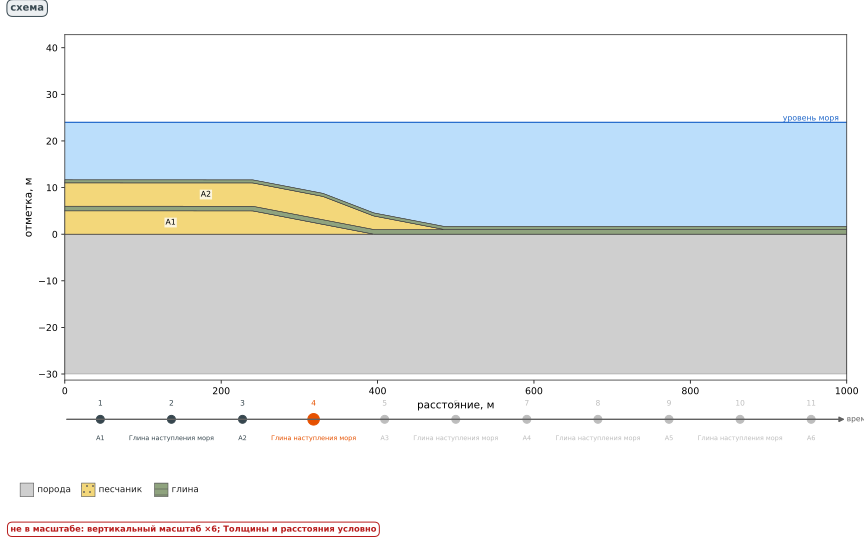
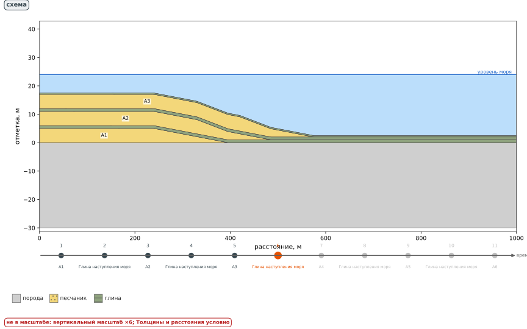
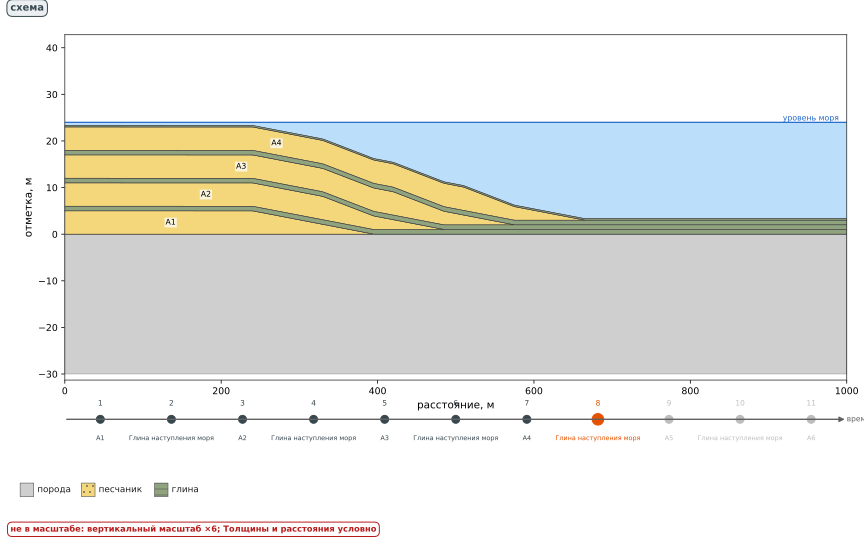
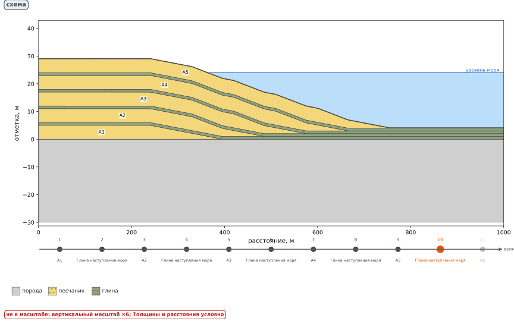
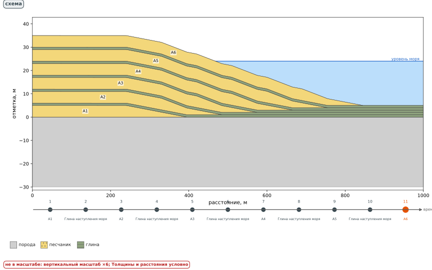

Пороговая идея. Временная корреляция раскрывает отдельные песчаные тела там, где раньше видели сплошной песчаник. модель
Интерактив: как это происходит






1 / 6
Отслеживаем положение тела A1 и границу со следующим этапом.
Не в масштабе: Толщины и расстояния (условно). Допущения: Геометрия и шкалы, если есть, условные; схема не оцифрована из книги..
Как это работает
Механизм
Капарук — месторождение мелового возраста на северном склоне Аляски. Автор называет его вторым по величине нефтяным месторождением Северной Америки с 6BBSTOOIP. К 2006 добыли 2BBO. Добычу ведут из интервалов A и C. стр. 422
«A similar example is provided by the Cretaceous Kuparuk River field on the North Slope of Alaska»
«This is the second largest oil field in North America, with 6BBSTOOIP»
«As of 2006, 2BBO had been produced»
«Production is from two intervals, named the A and C units»
схема
Кажущаяся непрерывность → Временная корреляция → Отдельные пески и глины.
Класс B · схема · нарисовано кодом · стр. 422
Как это видно
гамма-каротаж: Запись естественной радиоактивности вдоль скважины. В начале разработки каждый интервал считали боковым непрерывным песчаником. В интервале A выделили шесть отдельных песчаных тел. Они выдвигались к морю. Их разделяют глины морских наступлений. Рисунок показывает гамма-каротаж, последовательное выдвижение тел A1–A6 и их положение с учётом разломов. стр. 422–423
«In the early days of field development each unit was considered a laterally continuous sandstone body»
«However, sequence stratigraphy correlations revealed that the A unit consists of six separate sandstone bodies that prograded in the seaward (northeast) direction, each separated by a high-frequency transgressive marine shale (Fig. 9.25)»
«Kuparuk River unit A showing a typical gamma-ray log with units A3–A6, the progradational pattern from northwest to southeast of each successively younger unit (units A1–A6), a schematic illustration of the progradational pattern of the six units, and the units (different colors) with faults added»
Цифры и условия
Автор называет его вторым по величине нефтяным месторождением Северной Америки с 6BBSTOOIP. стр. 422
К 2006 добыли 2BBO. стр. 422
В интервале A выделили шесть отдельных песчаных тел. Они выдвигались к морю. Их разделяют глины морских наступлений. стр. 422
Частая ошибка модель
✗Ошибка: Интервал A — один сплошной песчаный пласт.
✓На самом деле: По временной корреляции в нём выделены шесть отдельных тел, между которыми залегают морские глины. стр. 422
Что это значит для данных по книге
Сопоставляют интервалы по времени, проверяют порядок выдвижения тел и их положение относительно разломов.
Вход
Капарук — месторождение мелового возраста на северном склоне Аляски.
Выход
Рисунок показывает гамма-каротаж, последовательное выдвижение тел A1–A6 и их положение с учётом разломов.
Где ломается
В тексте направление выдвижения дано как северо-восточное, а подпись описывает рисунок с северо-запада на юго-восток; без дополнительной проверки не следует считать их одним направлением.
Где здесь ручной труд специалиста
Входные данные
Капарук — месторождение мелового возраста на северном склоне Аляски.
Ручные шаги
Сопоставляют интервалы по времени, проверяют порядок выдвижения тел и их положение относительно разломов.
Точки суждения
В тексте направление выдвижения дано как северо-восточное, а подпись описывает рисунок с северо-запада на юго-восток; без дополнительной проверки не следует считать их одним направлением.
Время
Глава не оценивает трудозатраты; время зависит от объёма проверки и качества исходных наблюдений.
Типичные ошибки
Интервал A — один сплошной песчаный пласт.
Аналогия модель
По общему ярлыку видно один набор записей, но по временным отметкам видны отдельные партии.
Где аналогия перестаёт работать: Границы геологических тел и время определяют интерпретацией, не метками загрузки.
Рисунки книги к этому шагу по книге
Рис. 9.25. FIGURE 9.25 Kuparuk River unit A showing a typical gamma-ray log with units A3–A6, the progradational pattern from northwest to southeast of each successively younger unit (units A1–A6), a schematic illustration of the progradational pattern of the six units, and the units (different colors) with faults added. After Seifert et al. (2006). стр. 423(не перерисован — смотрите в книге)
Новые понятия
трансгрессия (transgression)
Наступление моря на сушу стр. 422модель
проградация (progradation)
Выдвижение осадочного тела в сторону моря стр. 422модель
гамма-каротаж (gamma-ray log)
Запись естественной радиоактивности вдоль скважины стр. 422модель
BBSTOOIP
Миллиарды баррелей исходной нефти в пласте стр. 422модель
BBO
Миллиарды баррелей нефти стр. 422модель
разлом (fault)
Нарушение со смещением пород стр. 422модель
Проверь себя
Один ответ
Верный ответ: Между ними лежат морские глинистые отложения
Все утверждения шага с дословной цитатой автора и страницей книги (по PDF).
Капарук — месторождение мелового возраста на северном склоне Аляски. наблюдение
«A similar example is provided by the Cretaceous Kuparuk River field on the North Slope of Alaska»
Автор называет его вторым по величине нефтяным месторождением Северной Америки с 6BBSTOOIP. наблюдение
«This is the second largest oil field in North America, with 6BBSTOOIP»
К 2006 добыли 2BBO. наблюдение
«As of 2006, 2BBO had been produced»
Добычу ведут из интервалов A и C. наблюдение
«Production is from two intervals, named the A and C units»
В начале разработки каждый интервал считали боковым непрерывным песчаником. наблюдение
«In the early days of field development each unit was considered a laterally continuous sandstone body»
В интервале A выделили шесть отдельных песчаных тел, выдвигавшихся к морю и разделённых глинами морских наступлений. наблюдение
«However, sequence stratigraphy correlations revealed that the A unit consists of six separate sandstone bodies that prograded in the seaward (northeast) direction, each separated by a high-frequency transgressive marine shale (Fig. 9.25)»
Рисунок показывает гамма-каротаж, последовательное выдвижение тел A1–A6 и их положение с учётом разломов. наблюдение
«Kuparuk River unit A showing a typical gamma-ray log with units A3–A6, the progradational pattern from northwest to southeast of each successively younger unit (units A1–A6), a schematic illustration of the progradational pattern of the six units, and the units (different colors) with faults added»
Исходный текст урока
Стр. 422 · 9.4.3 Kuparuk River Field, Alaska USA
A similar example is provided by the Cretaceous Kuparuk River field on the North Slope of Alaska. This is the second largest oil field in North America, with 6BBSTOOIP. As of 2006, 2BBO had been produced. Production is from two intervals, named the A and C units. In the early days of field development each unit was considered a laterally continuous sandstone body. However, sequence stratigraphy correlations revealed that the A unit consists of six separate sandstone bodies that prograded in the seaward (northeast) direction, each separated by a high-frequency transgressive marine shale (Fig. 9.25).
Стр. 423 · 9.4.3 Kuparuk River Field, Alaska USA
FIGURE 9.25 Kuparuk River unit A showing a typical gamma-ray log with units A3–A6, the progradational pattern from northwest to southeast of each successively younger unit (units A1–A6), a schematic illustration of the progradational pattern of the six units, and the units (different colors) with faults added. After Seifert et al. (2006).